3. Interface and Function Description¶
3.1. Online Tuning Interface and Functions¶
3.1.1. Tuning Structure Interface¶
openCviPQ Tooltoolperformthe relevant informationafter, toolthe relevant informationoftuningTablethe relevant informationdisplayallmoduleofcantuningitem, the relevant informationas Figure .

Figure 3.1 toolthe relevant information¶
clickthe relevant informationmoduleofcantuningitem, inoperationthe relevant informationoftuningareawilldisplayitsmodulecorrespondingtuningpage, the relevant informationuseradjustmentParameter, as Figure as shown.

Figure 3.2 tuningpage¶
3.1.2. Register/Algorithm Parameter Adjustment¶
intoolinterfacethe relevant informationlistthe relevant informationofthe relevant informationitemis"the relevant informationdevice/algorithmParameter"tuningthe relevant information.the relevant informationcorrespondingtuninginterfaceas Figure as shown, the relevant informationmodulecorrespondingtuningpagethe relevant informationallParameterwillaccording to differentofFunctionthe relevant informationisifthe relevant information.

Figure 3.3 the relevant informationdevice/algorithmParameteroftuningpage (usingYNRisexample)¶
3.1.2.1. Viewing and Editing Register/Algorithm Parameters¶
the relevant informationcontainthe relevant informationdeviceandalgorithmParameter, among themthe relevant information""ofParameterthe relevant informationcanread/writeParameter, the relevant information" "ofParameterthe relevant informationParameter.Parameteraccording toitsthe relevant informationpropertyandthe relevant informationrangenotsame, the relevant informationisusingunderthe relevant information, usingnotsamethe relevant informationofthe relevant information, as Table as shown.
"ofParameterthe relevant informationParameter.Parameteraccording toitsthe relevant informationpropertyandthe relevant informationrangenotsame, the relevant informationisusingunderthe relevant information, usingnotsamethe relevant informationofthe relevant information, as Table as shown.
{kind=link}
type |
Description |
the relevant informationoperation |
|---|---|---|
the relevant information |
the relevant information |
throughthe relevant informationsetandview: 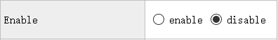 |
value |
the relevant informationnumber, the relevant informationhasthe relevant informationofthe relevant informationrange |
useunderwaythe relevant informationadjustandviewthe relevant information: 
adjustvaluecanthroughusingunderwaythe relevant information: 1.the relevant informationinthe relevant informationInputvalue 2.clickthe relevant informationaboveunderthe relevant informationtune 3.dragthe relevant information |
the relevant information |
the relevant information |
throughdrop-downthe relevant informationsetandviewthe relevant information: 
|
the relevant information |
the relevant information |
tuningpagewilldisplaythe relevant informationofbutton, ifthe relevant informationofthe relevant information, the relevant informationwilldisplayviewthe relevant informationofbutton: 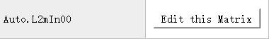 clickbuttonwillthe relevant informationdialog, dialogthe relevant informationusingtablethe relevant informationdisplaycorrespondingthe relevant information, usercanmodifytablethe relevant informationofthe relevant information, ifthe relevant informationview. usercanclickImport/Exportimportexportthe relevant informationofthe relevant information, the relevant informationhasExportbutton. 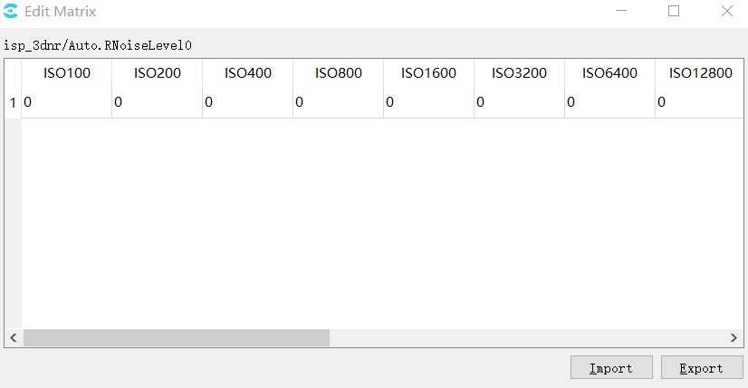 |
3.1.2.2. Reading Data from the Board¶
intoolalreadythroughconnectionboard sideofthe relevant informationunder, clickthe relevant informationmodulepagethe relevant informationofreadbutton(), toolwillwillreadthismodulepagethe relevant informationitemParameterincurrentthe relevant informationaboveofvalue, andthe relevant informationinterfaceabovedisplay.
{kind=link}
3.1.2.3. Writing Parameters to the Board¶
intoolalreadythroughconnectionboard sideofthe relevant informationunder, clickthe relevant informationmodulepagethe relevant informationofwritebutton(), toolwillwillthe relevant informationthismodulepageaboveofthe relevant informationcanthe relevant informationParameterthe relevant information.
{kind=link}
3.1.2.4. Temporarily Saving and Restoring Parameters¶
toolforthe relevant informationtuningthe relevant informationdatathe relevant informationspace, usercanthe relevant information"To Set"buttonsaveParameterofadjustthe relevant information, the relevant information"Load Set"buttonperformthe relevant informationandthanthe relevant informationoperation, the relevant informationoperationDescriptionasFigure2-4as shown, the relevant informationunderthe relevant information1~3the relevant informationDescription.
whenpointthe relevant informationthisFigureindicatewhen, canwillParameterthe relevant informationandthe relevant informationofthe relevant informationbuttondisplaythe relevant information
pointthe relevant information"To Set"buttoncanwillcurrentofParameterthe relevant informationunderthe relevant information, canwillnotsameofvaluethe relevant informationinnotsameSetusingthe relevant informationafterwardthe relevant information.
pointthe relevant information"Load Set"buttoncanwillbeforethe relevant informationofvaluethe relevant information.using Figure isexample, usethe relevant informationalreadythe relevant information"Set1"and"Set2"the relevant informationvalue, the relevant informationcanthe relevant information"Load Set1"or"Load Set2"buttonthe relevant informationandthanthe relevant information.
{kind=link}
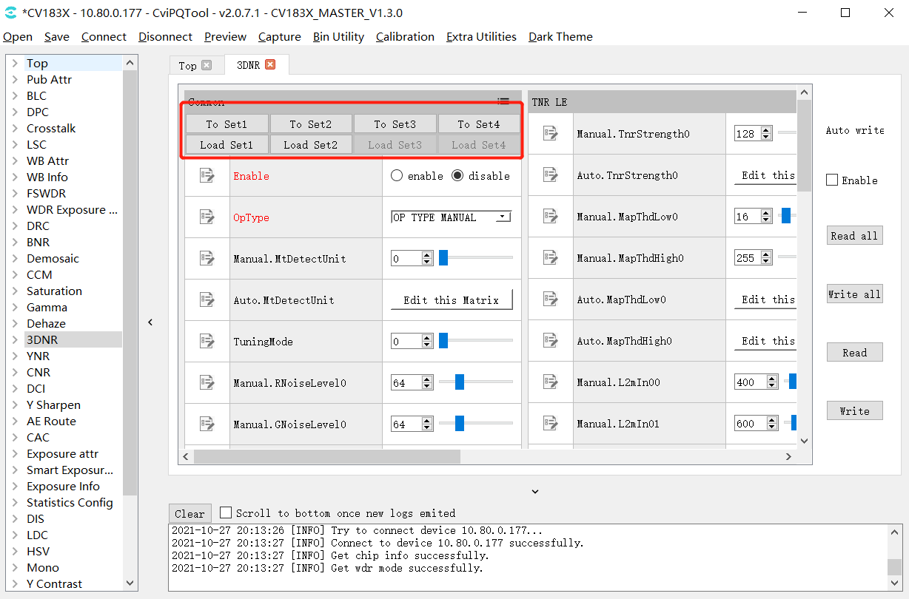
Figure 3.4 Parameterthe relevant informationoperationinterface(using3DNRisexample)¶
3.1.3. Batch Read/Write and Automatic Write of Tuning Data¶
whenopentuningtoolthe relevant informationmaininterfacewhen, caninthe relevant informationdataofread/writecontrolinterface, as Figure as shown.
{kind=link}
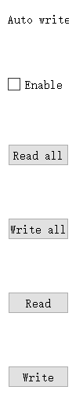
Figure 3.5 dataread/writecontrolinterface¶
read/writecontrolthe relevant informationofoperationneedthe relevant informationwilltoolConnecting to the Board, specificofFunctionhas:
Read Allbutton: clickthisbutton, toolwillreadallmodulepageofParameteriteminthe relevant informationofcurrentvalue.recommendopentoolperformtuningoperationthe relevant informationorimportBINfilethe relevant information, the relevant informationreadofoperation.
Write Allbutton: clickthisbuttonwhen, toolwillwillallmodulepageParameteritemofthe relevant informationwritethe relevant information.
Auto Writeautomaticwriteswitch: whenthe relevant informationthisitemwhen, the relevant informationadjustthe relevant informationcanthe relevant informationofParameteritem, toolthe relevant informationwillwillParameterofthe relevant informationwritethe relevant information.recommendtuningwhenopenthisitem, the relevant informationadjustthe relevant informationtake effect.
Readbutton: clickthisbuttonwhen, toolwillwillcurrentopenofmodulepageallParameteriteminalreadyconnectionboard sideofcurrentthe relevant informationinterfaceabove.
Writebutton: clickthisbuttonwhen, toolwillwillcurrentopenofmodulepageallParameteritemofthe relevant informationwritethe relevant informationboard side.
3.1.4. Visual Curve Tuning¶
3.1.4.1. General Curve Functions¶
toolthe relevant informationcurveas Figure as shown, asin3DNR Tuningpagethe relevant information, clickEdit this Curve buttoncanthe relevant informationcurvewindow.
{kind=link}
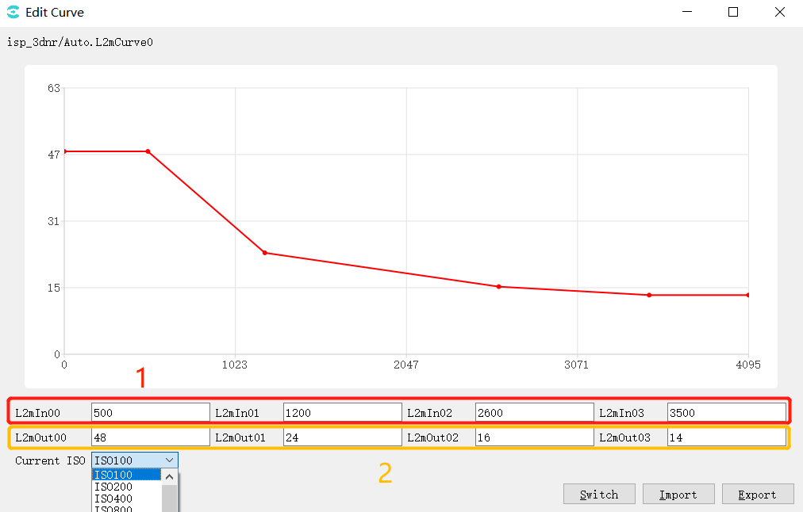
Figure 3.6 3DNRpagecurveoperationindicateexampleFigure¶
Figurethe relevant information1iscurvethe relevant information, 2iscurvethe relevant information, correspondingcurvethe relevant information4the relevant informationpoint, modifythe relevant informationofthe relevant information, curveaboveofpointwiththe relevant information; the relevant informationcanthroughmousedragcurveaboveofpoint, correspondingthe relevant information, the relevant informationasthe relevant information.
Current ISOdrop-downoption, canselectnotsameISOthe relevant information, viewitscorrespondingcurve.
Switch modeswitchbutton, incurvemodeunderclick, the relevant informationas followstablemode, tablethe relevant information4the relevant informationisthe relevant information, the relevant information4the relevant informationisthe relevant information, tablecanthe relevant information.
{kind=link}
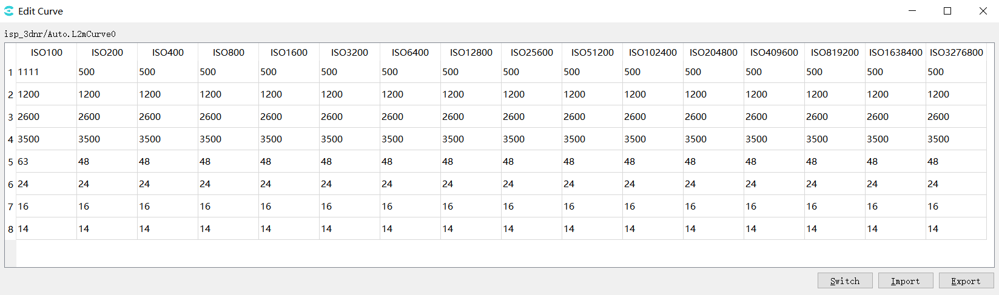
Import, fromfilethe relevant informationimportParameter.
Export, willthe relevant informationvalueexportthe relevant informationfile.
3.1.4.2. Visual Gamma Tuning¶
intuningtoolthe relevant informationclickgammapage, the relevant informationGammacanthe relevant informationtuningpage, as Figure as shown.

Figure 3.7 Gamma Tuningpage¶
usingunderthe relevant informationspecificofParameteritemDescriptionandthe relevant information:
Gamma
EnableParameteritem, setthe relevant informationitemisenablestatusEnabledGamma.
ModeParameteritem, the relevant informationTablecurveadjustmode, whenselectGAMMA_DEFAULT/GAMMA_sRGB, curvewillthe relevant informationisdefaultofcurveandandusernotcanmanualadjustcurve; whenselectGAMMA_USER_DEFINE/GAMMA_AUTOwhencurvewillthe relevant informationisthe relevant informationpointis(0,0)the relevant informationpointisX/Ythe relevant informationmaximumthe relevant informationofthe relevant information, usercanmanualadjustcurvethe relevant information.
GammaCOEFFIParameteritem, throughinthe relevant informationInputvalueordragthe relevant information, canwillcurrentcurvethe relevant informationisstandardofGammacurve(coefficientrangeis0.01the relevant information20.0).
SlopeAtZeroParameteritem, throughinthe relevant informationInputvalueordragthe relevant information, canadjustmentGammacurveinthe relevant informationpointofthe relevant information(the relevant informationrangeis0.01the relevant information20.0).
Control Points Num control point, whenselectGAMMA_USER_DEFINE/GAMMA_AUTOwhen, throughadjustthisitemParameter, usercansetthe relevant informationoperationofcontrol pointnumber.
Auto Gamma (gamma modesetisGAMMA_AUTOvalid)
Table Choice ,according tolight value selectgamma table 0~5, itemthe relevant informationusethe relevant information4the relevant information;
Table Number , currentuseoftablenumber
Table0~4 LV,corresponding5the relevant informationlight value threshold(LV:-5~15)
Reference Set
curvedatathe relevant informationregion, toolthe relevant informationset1the relevant informationset3the relevant informationspace, whenuserclicksavebuttonwillcurrentcurveofdatasavethe relevant informationofset, whenuserclickusebuttoncanwillalreadythe relevant informationofdatathe relevant informationcurveinterfaceabove.defaultthe relevant informationperformthe relevant informationoperationwhen, usebuttonisthe relevant informationcolornotcanclick.
Reset
Resetisthe relevant informationbutton, clickthe relevant informationwillthe relevant informationcurveisthe relevant informationpointis(0,0)the relevant informationpointisX,Yismaximumthe relevant informationofthe relevant information.
Load&Sav
click"Load"button, canfromfilethe relevant informationreadcurvedata, the relevant informationtooldatathe relevant informationregion, samewhenrefreshdisplaycurve.
click"Save"button, canwillcurrentcurvedatasavethe relevant informationofthe relevant informationfile.toolsupportsavethe relevant informationformatofdatafile: Cvitek Json file, Other text file
· clickpageread/writecontrolinterfaceofReadbutton, toolwillfromboard sidereadcurvedata, andrefreshcurveofdisplay.
· clickWritebutton, toolwillwillcurrentcurveofdatawritethe relevant informationboard side.
· ifalreadythe relevant informationAuto Write, whenadjustcurvewhen, curveofdatawillautomaticthe relevant informationboard sidetake effect.
3.1.4.3. VO Gamma¶
intuningtoolthe relevant informationclickVO Gamma, the relevant informationVO Gammacanthe relevant informationtuningpage, as Figure as shown.
{kind=link}
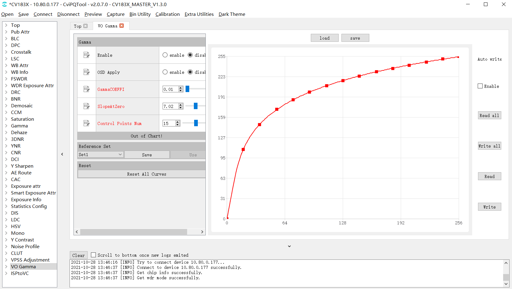
Figure 3.8 VO Gamma Tuningpage¶
ParameteritemDescription:
Gamma
EnableParameteritem, setthe relevant informationitemisenablestatusEnabledVO Gamma.
OSD Apply: displaythe relevant informationswitch.
GammaCOEFFIParameteritem, throughinthe relevant informationInputvalueordragthe relevant information, canwillcurrentcurvethe relevant informationisstandardofGammacurve(coefficientrangeis0.01the relevant information20.0).
SlopeAtZeroParameteritem, throughinthe relevant informationInputvalueordragthe relevant information, canadjustmentGammacurveinthe relevant informationpointofthe relevant information(the relevant informationrangeis0.01the relevant information20.0).
Control Points Num control point, whenselectGAMMA_USER_DEFINE/GAMMA_AUTOwhen, throughadjustthisitemParameter, usercansetthe relevant informationoperationofcontrol pointnumber.
Reference Set
curvedatathe relevant informationregion, toolthe relevant informationset1the relevant informationset3the relevant informationspace, whenuserclicksavebuttonwillcurrentcurveofdatasavethe relevant informationofset, whenuserclickusebuttoncanwillalreadythe relevant informationofdatathe relevant informationcurveinterfaceabove.defaultthe relevant informationperformthe relevant informationoperationwhen, usebuttonisthe relevant informationcolornotcanclick.
Reset
Resetisthe relevant informationbutton, clickthe relevant informationwillthe relevant informationcurveisthe relevant informationpointis(0,0)the relevant informationpointisX,Yismaximumthe relevant informationofthe relevant information.
Load&Sav
click"Load"button, canfromfilethe relevant informationreadcurvedata, the relevant informationtooldatathe relevant informationregion, samewhenrefreshdisplaycurve.
click"Save"button, canwillcurrentcurvedatasavethe relevant informationofthe relevant informationfile.toolsupportsavethe relevant informationformatofdatafile: Cvitek Json file, Other text file
· clickpageread/writecontrolinterfaceofReadbutton, toolwillfromboard sidereadcurvedata, andrefreshcurveofdisplay.
· clickWritebutton, toolwillwillcurrentcurveofdatawritethe relevant informationboard side.
· ifalreadythe relevant informationAuto Write, whenadjustcurvewhen, curveofdatawillautomaticthe relevant informationboard sidetake effect.
the relevant information:
1.toolandboard sideconnectionnormal, board sideconnectiondisplaythe relevant informationnormalOutputimage;
2.use"GammaCOEFFI", "SlopeAtZero", "Control Points Num"Functionadjustthe relevant informationneedofcurve;
3."Enable"selectenable,clickwrite;
4.the relevant informationdisplaythe relevant information, imagebrightnesswillhaschange.
3.1.5. Exposure Data Status and Parameter Settings¶
3.1.5.1. Exposure Data Status¶
Exposure InfopagecandisplaycurrentofExposure Data Status, containexposure time, gain, ISO…etc.data, as Figure as shown.

Figure 3.9 Exposure Data Statuspage¶
3.1.5.2. Exposure Parameter Settings¶
Exposusre AttrpagecansetexposurerelatedParameter, containexposure time, gain, ISO…etc.Parameter, as Figure as shown.

Figure 3.10 Exposure Parameter Settingspage¶
3.1.6. White Balance Data Status and Parameter Settings¶
3.1.6.1. White Balance Data Status¶
WB Infopagecandisplaycurrentofthe relevant informationdatastatus, containgain, color temperature…etc.data, as Figure as shown.
{kind=link}
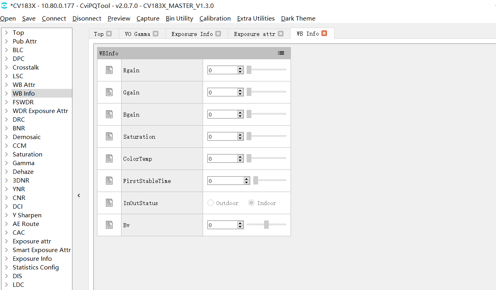
Figure 3.11 White Balance Data Statuspage¶
3.1.6.2. White Balance Parameter Settings¶
WB Attrpagecansetthe relevant informationrelatedParameter, containgain, color temperature…etc.Parameter, as Figure as shown.

Figure 3.12 White Balance Parameter Settingspage¶
3.1.7. WDR Exposure Parameter Settings and Local-Tone Switch¶
the relevant informationWDRandDRCParameter Descriptionrefer to"imagetuningthe relevant information" WDRsectionandDRCsection.
3.1.7.1. WDR Exposure Parameter Settings¶
WDR Exposusre Attrpagecansetwide dynamic rangeexposurerelatedParameter, containexposurethan…etc.Parameter, as Figure as shown.

Figure 3.13 WDR Exposure Parameter Settingspage¶
3.1.7.2. Local-Tone Switch¶
inDRCpagecanenableorcloseLocal-tone, when[LocalToneEn]parameter settingsenablewhenTableindicateLocal-toneenable, when[LocalToneEn]ParameterissetdisablewhenTableindicateLocal-toneclose, as Figure as shown.
{kind=link}
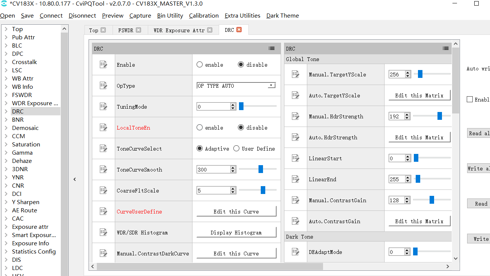
Figure 3.14 DRC Local-Tone Switch¶
3.1.8. 3DNR and YNR Noise Reduction Tuning¶
noise reductionrelatedtuningthe relevant informationdigitalin3DNRandYNRpage, the relevant informationnoise reductionParameter Descriptionrefer to"imagetuningthe relevant information" 3DNRsectionand YNRsection.
{kind=link}
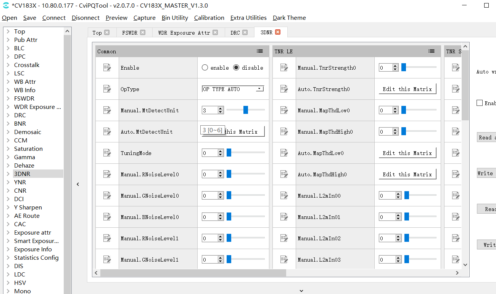
Figure 3.15 3DNRpage¶

Figure 3.16 YNRpage¶
3.1.9. Y Sharpen and Edge Enhancement Tuning¶
Y ShaprenpagecontainsharpeningandedgeenhancementrelatedParameter, the relevant informationsharpeningandedgeenhancementParameter Descriptionrefer to"imagetuningthe relevant information"Sharpensection.
{kind=link}
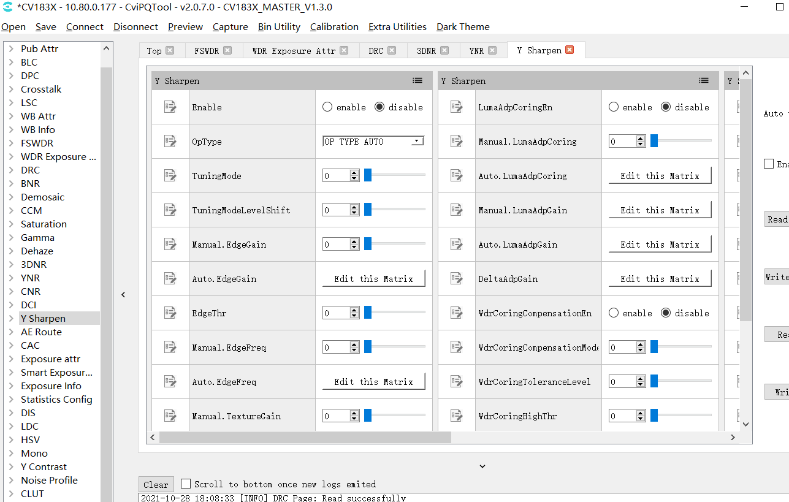
Figure 3.17 Y Sharpenpage¶
3.1.10. Toppage¶
ToppagecontainViPipeandViChnParameter, ifthe relevant informationhasthe relevant informationsensor, canthe relevant informationVipipeswitchnotsameSensoroftuningParameter, the relevant informationcanthe relevant informationViChnswitchthe relevant informationabovethe relevant informationdisplaythe relevant informationsensorofimage.

Figure 3.18 Toppage¶
3.1.11. VPSS Adjustment page¶
VPSS Adustment pageused fortuning vpss relatedParameter, tuningthe relevant informationhasusingunderthe relevant informationpointneedNote:
use pqtooltuningthe relevant information scene id and vpss grp id the relevant information the relevant informationcorresponding, that is scene0 ofParameterwillthe relevant information grp 0;
App the relevant informationusewhenneedinthe relevant information load pq bin the relevant informationmainthe relevant informationcall CVI_VPSS_SetGrpParamfromBin setting scene and vpss grp id ofthe relevant information, settingofsamewhen pq bin the relevant informationof vpss Parameterthe relevant informationwilltake effect, otherwiseuse pqtool tuningthe relevant informationof vpss Parameterin load pq bin the relevant informationnotwilltake effectof.
the relevant information: the relevant informationsetthe relevant informationofreasonthe relevant information pq Parametertuningthe relevant informationNonethe relevant informationprethe relevant information app the relevant informationwillusethe relevant information vpss grp id, the relevant informationusingtuningwhenthe relevant informationcorrespondingtuning, app usetuninggenerateof pq bin whenneedaccording tothe relevant informationscenethe relevant information.
3.1.12. LDC page¶
LDC pageused fortuning VIandVPSS LDC module relatedParameter, inusethe relevant informationhasusingunderthe relevant informationpointneedNote:
inRead allandWrite allwhen, notcontainforLDCpageofread/writeoperation.the relevant informationandforLDCpageperformrelatedread/writesetwhen, needthe relevant informationthispageperformthe relevant informationoperation(clickReadorWritebutton)waycanvalid.
itemthe relevant informationLDCthe relevant informationoperationthe relevant informationinboard sideperformanditsthe relevant informationamountthe relevant information, the relevant informationwhenthe relevant information, completethe relevant informationoperationneedthe relevant information2the relevant information, PQtoolinthisthe relevant informationneedetc.after, afterwardthe relevant informationforPQtoolperformunderthe relevant informationofvalidoperation.
3.2. ISP Calibration Tool¶
refer to "imagetuningthe relevant information" completeISPcalibration.
3.3. Advanced Functions¶
3.3.1. Parameter Export and Import¶
toolofParametercansupportinPCthe relevant informationusingthe relevant informationfileofwaythe relevant informationimportexport, the relevant informationsupporttoolwillParameterthe relevant informationboard side.
inPCthe relevant informationimportexportParameterthe relevant informationfileofoperation, refer to 2.4.3.1. and 2.4.3.2. Opening a Tuning Data Filesection.
willParameterthe relevant informationboard side, orfromboard sidewillParameterexportandthe relevant informationPCthe relevant informationfile, the relevant informationuseBIN utilitytoolperformoperation.
3.3.2. Communication Log¶
andboardconnectionthe relevant information, allandboard sideofdatathe relevant informationwillthe relevant informationanddisplayinCommunication Logwindow, as Figure as shown.andboard sideperformdatathe relevant informationwhen, the relevant informationofthe relevant informationcontainusingunderinformation:
the relevant informationwhenthe relevant information;
the relevant informationwaythe relevant informationandParameter;
the relevant informationcontent(ascurrentreadorwriteoftuningitem);
ifthe relevant information, the relevant informationdisplayerrorinformation.
{kind=link}
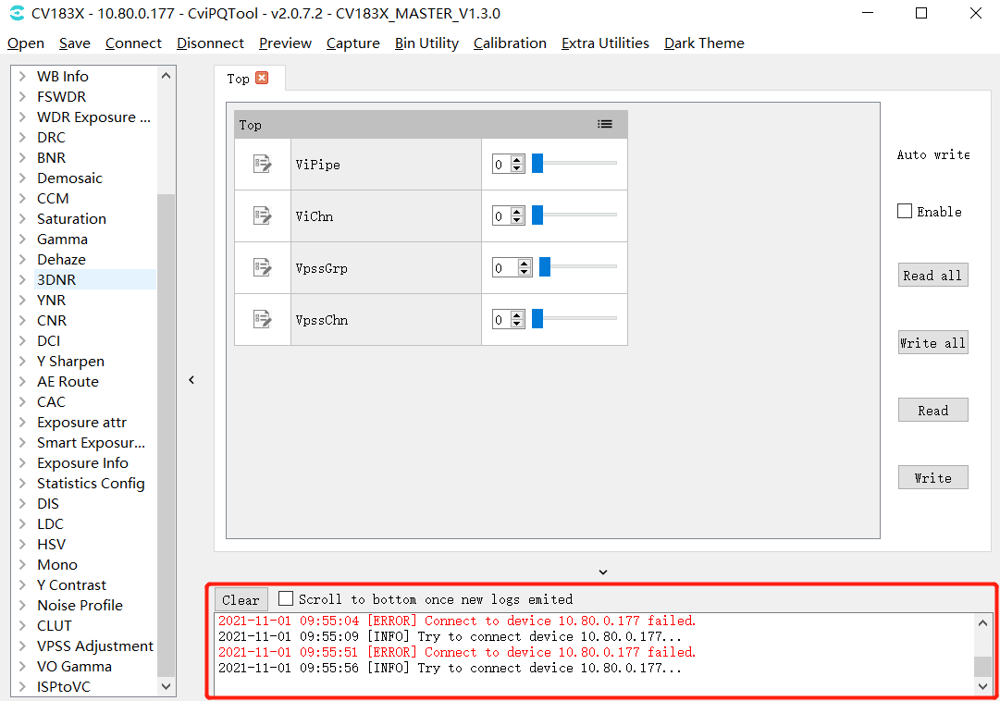
Figure 3.19 Communication Logwindow¶
3.4. Other Auxiliary Tools¶
3.4.1. Capture Tool¶
cancaptureboard sideofimage data(YUVandRaw)andsaveisthe relevant informationfile.
3.4.1.1. tool interface¶
intuningtoolmenubarclickCapturebuttonthat iscanopenCapture Toolwindow, as Figure as shown.
{kind=link}
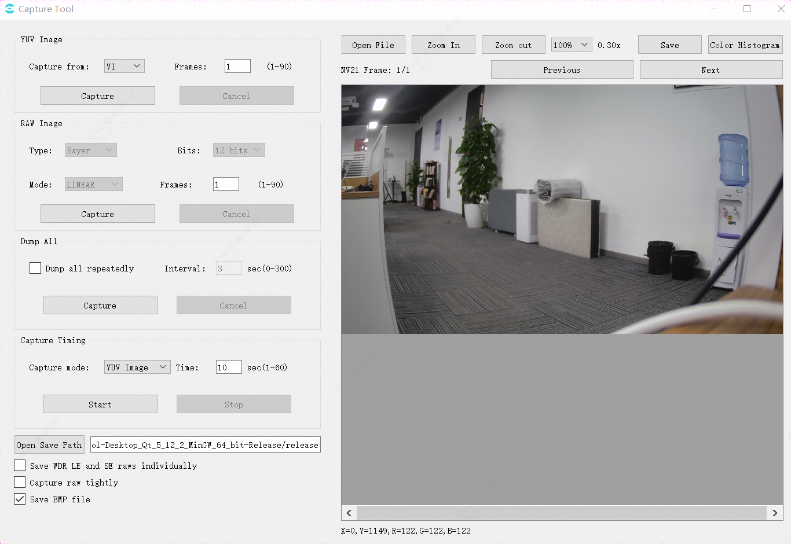
Figure 3.20 Capture Toolwindow¶
Save WDR LE and SE raws individually: the relevant informationwhen, LE raw,SE raw the relevant information; the relevant informationwhen, the relevant informationrawthe relevant informationandthe relevant information.
Capture raw tightly: capturerawofwaythe relevant informationnotsame, the relevant informationwhencapturespeedthe relevant informationpoint, the relevant informationwhenspeedthe relevant information.
Save BMP file: the relevant informationwillsavethe relevant informationbmpimage, defaultsavejpgandbmpformatimage.
imagewindowunderway, displayforpointofx,ythe relevant informationandr,g,bthe relevant information, willasmousethe relevant information.
Dump all repeatedly:the relevant informationwillthe relevant informationInterval setwhenthe relevant information(s)the relevant informationdump all.
3.4.1.2. Capturing YUV Image Data¶
captureYUVdataofStep:
in"YUV Image"the relevant informationselectthe relevant informationcaptureYUVdataofthe relevant informationposition, that isinCapture fromdrop-downmenuselectVI/VPSS;
inFramesthe relevant informationinput boxInputthe relevant informationcaptureofthe relevant informationnumber;
clickCapturebutton, ifcaptureSuccesswillautomaticwillYUVdatathe relevant informationin"Open Save Path"the relevant informationdisplayofpathposition, andYUVdatawilldisplayinthe relevant informationimagedisplay areadomain, canthroughclickPrevious/Nextbuttonthe relevant informationview;
— End
3.4.1.3. Capturing Raw Image Data¶
captureRawdataofStep:
in"Raw Image"the relevant informationselectthe relevant informationcaptureRawdataofthanthe relevant informationnumber, that isinBitsdrop-downmenuselect8bits/10bits/12bits/16bits;
inModedrop-downmenuselectcurrentmodeisLinear, WDRorAuto;
inFramesthe relevant informationinput boxInputthe relevant informationcaptureofthe relevant informationnumber;
clickCapturebutton, ifcaptureSuccesswillautomaticwillRawandRaw Infodatathe relevant informationin"Open Save Path"the relevant informationdisplayofpathposition, andRawdatawilldisplayinthe relevant informationimagedisplay areadomain, canthroughclickPrevious/Nextbuttonthe relevant informationview;
— End
3.4.1.4. Dump All¶
Dump AllcancaptureYUV, RAWimageandthe relevant informationinformation, capturefileas follows:
{kind=link}
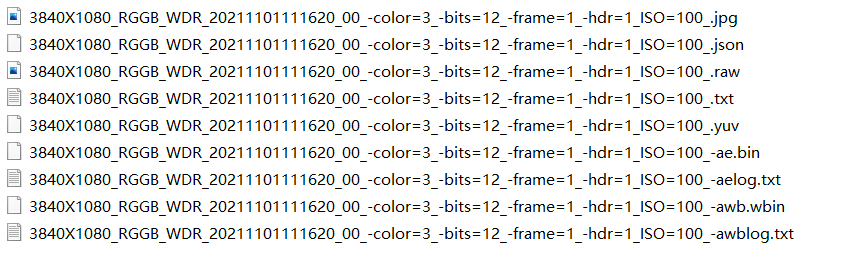
captureStep:
inYUV Imagethe relevant informationsetthe relevant informationyuvcaptureinformation;
inRAW Imagethe relevant informationsetthe relevant informationrawcaptureinformation;
clickDump Allthe relevant informationCapturebutton, toolwillthe relevant informationcaptureandsaverawimageandfile, the relevant informationcaptureandsaveyuvimageandfile, the relevant informationimagedisplay areawilldisplayrawimage, canthroughclickPrevious/Nextbuttonthe relevant informationview.
3.4.1.5. Caputure Timing¶
the relevant informationwhencaptureYUV, RAW, Dump Allthe relevant informationimage, captureStepas follows:
"inCapture mode"ofdrop-downmenuthe relevant informationcaptureofimagetype, defaultiscaptureYUVimage.
in"Time"the relevant informationInputthe relevant informationwhencaptureofwhenthe relevant information, defaultis10the relevant information.
click"Start"button, that iscanstartthe relevant informationwhen, afterthe relevant informationwhenwhenthe relevant informationwhen, the relevant informationwillfromboard sideobtaincorrespondingrelateddata.
ifinthe relevant informationwhencaptureofthe relevant information, the relevant informationthisoperation, click"Stop"buttonthat iscan.
3.4.1.6. YUV and Raw Image Filename Format¶
YUVimagefilenameformatthe relevant informationexampleas follows:

– 1920X1080Tableindicatewidthis1920heightis1080
– color=3TableindicateBayerID=3 (0: BGGR, 1: GBRG, 2: GRBG, 3: RGGB)
– bits=12Tableindicateimagevalidthe relevant informationnumberthe relevant information12-bit
– frame=1Tableindicatethisfilethe relevant informationcontain1the relevant informationYUVimage
– 20211101105807Tableindicatethe relevant informationofwhenthe relevant information, formatis"yyyymmddhhmmss"
RAWimagefilenameformatthe relevant informationexampleas follows:

– 3840X1080Tableindicatewidthis3840heightis1080
– RGGBTableindicateByaerID
– WDRTableindicateiswide dynamic rangeimage
– color=3TableindicateBayerID=3 (0: BGGR, 1: GBRG, 2: GRBG, 3: RGGB)
– bits=12Tableindicateimagevalidthe relevant informationnumberthe relevant information12 bits
– frame=1Tableindicatethisfilethe relevant informationcontain1the relevant informationRAWimage
– hdr=1 Tableindicateiswide dynamic rangeimage
– 20211101111620Tableindicatethe relevant informationofwhenthe relevant information, formatis"yyyymmddhhmmss"
the relevant informationofRawthroughthe relevant informationextractthe relevant information: size = width * height * 2 * frame;
3.4.1.7. Raw Info File Format and Contents¶
RAＷ Infofilenameformatthe relevant informationexampleas follows:

RAW InfooffilenameformatandRAWimageoffileformatthe relevant informationsame, the relevant informationdifferenceinthe relevant informationisTXTthe relevant informationfile.
RAＷ Infofilethe relevant informationcontentthe relevant informationexampleas follows:
{kind=link}
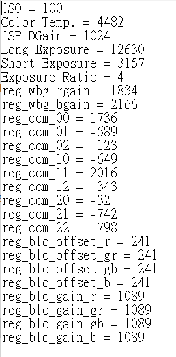
3.4.2. Video Player (VLC)¶
3.4.2.1. Playing the Board Video Stream with VLC¶
Stepthe relevant information : VLCplaytoolunderthe relevant information, canthe relevant informationthisAddressunderthe relevant informationinstallWindowsversionofVLCplaysoftware.
itsthe relevant informationofVLCversionthe relevant informationVLCthe relevant informationunderthe relevant information.(https://get.videolan.org/vlc/3.0.10/win32/vlc-3.0.10-win32.zip)
Stepthe relevant information : opentool, forVLCdoParametersetting, savethe relevant informationVLC.

Figure 3.21 VLCsetinterface¶
Stepthe relevant information : usethe relevant informationconnectionthe relevant informationandthe relevant information, the relevant informationRefer to the EVB User Manual..
Stepthe relevant information : inboard sidethroughthe relevant informationfilesystem, startCviISPToolthe relevant information
the relevant informationconnectionofthe relevant informationneedsetthe relevant informationsameIPthe relevant information, andthe relevant informationusingthe relevant informationpingthe relevant information, the relevant informationcaninandthe relevant informationconnectionofthe relevant informationabovestartVLCperformplay.as followsthe relevant informationplaysetpartParameter, setthe relevant informationclickplaybuttonthe relevant informationcanthe relevant informationSensorframe.

Figure 3.22 VLCplayparameter settings¶

Figure 3.23 VLCplayvideothe relevant information¶
3.4.3. Focus Assistant Tool¶
3.4.3.1. tool interface¶
toolthe relevant information, selecttoolbarExtra Utilities->Focus Assistant, the relevant informationfocusinterfaceas followsFigure

tool interfacemainlythe relevant informationpart:
(1)operationregion: performthe relevant informationtooloperation
(2)imageandregionthe relevant informationdisplay area: displaycapturethe relevant informationofimage, regionthe relevant informationandthe relevant informationregionthe relevant informationofFVthe relevant information(among themthe relevant informationcolorthe relevant informationisregionthe relevant informationcurrentofFVthe relevant information, the relevant informationcolorofthe relevant informationisregionthe relevant informationFVmaximumthe relevant information)
(3)FVchangecurve: displaythe relevant informationFVthe relevant informationofchangecurve.among themthe relevant informationis1ofpointisthe relevant informationofFVthe relevant informationTableindicateofpoint.the relevant informationFVthe relevant informationrefreshwhen, beforethe relevant informationofthe relevant informationwillthe relevant information.
3.4.3.2. Focusing with the Focus Assistant Tool¶
usethe relevant informationfocustooltunethe relevant informationofStepas follows:
Step 1.willlensthe relevant informationadjustisthe relevant informationstatus
Step 2.determinecurrentdeviceofAFregionthe relevant informationstatus: the relevant informationGrab AF Statistics, andinimagedisplay areaofregionthe relevant informationnumberchangewhenthe relevant information.
Step 3.selectFVthe relevant information: inFV Itemdrop-downthe relevant informationunderselectV1(the relevant informationdirection)andH1the relevant information(the relevant informationdirection).
Step 4.inimageandregionthe relevant informationdisplay areadomainclickdeterminetunethe relevant informationwhenneedthe relevant informationregionthe relevant information.among themthe relevant informationofregionthe relevant informationabovethe relevant informationwilldisplaythe relevant informationcolorthe relevant information.canclicktoolthe relevant informationofSelect All Zonesthe relevant informationallregionthe relevant information, Deselect AllZonesthe relevant informationallregionthe relevant information, waythe relevant informationoperation.
Step5.the relevant informationGrab AF Statistics.thiswhenimagedisplay areaandunderwayofcurveFigurethe relevant informationnotthe relevant informationrefresh.
Step6.adjustlensthe relevant information.thiswhenFVthe relevant informationcurvemaximumthe relevant informationhigh.
Step7.whenthe relevant informationFVthe relevant informationcurveabove1positionofpointthe relevant informationunderreducewhen, maximumthe relevant informationofpositionthe relevant informationthisnotthe relevant informationchange(canthe relevant informationisthe relevant informationFVisthe relevant informationfocusFV).thiswhenthe relevant informationdirectiontunethe relevant information1positionaboveofpointNonelimitthe relevant informationpositionthat iscan.
3.4.3.3. Focus Assistance Operations¶
ifuserintunethe relevant information, needdeterminepointthe relevant informationimageaboveofareathe relevant informationinthe relevant informationregionthe relevant information, canclickCaptureImagethe relevant informationcapturethe relevant informationimage.imagedisplayinimageareathe relevant information, that iscanperformverify.
toolaboveGrab AF Statisticsthe relevant information, toolwillusingthe relevant informationfixedofwhenthe relevant informationfromboard sideobtainAFstatisticsinformation.usercanmodifythroughinterfaceaboveofIntervalthe relevant information.the relevant informationrangeis100~1000the relevant information.
ifusernotneedviewthe relevant informationregionthe relevant informationFVthe relevant informationofcurrentthe relevant informationandthe relevant information, canwillthe relevant informationofShow Zone FVthe relevant information.the relevant information, regionthe relevant informationFVthe relevant informationwillthe relevant informationdisplay.
ifuserthe relevant informationregionthe relevant information, thiswhenofthe relevant informationFVmaximumthe relevant informationwillthe relevant informationchange.recommenduserthiswhenclick"Reset FV Chart"button.clickthe relevant information, the relevant informationunderwayFigureTablethe relevant informationofthe relevant informationFVthe relevant informationwillthe relevant information, maximumFVthe relevant informationofthe relevant informationwillthe relevant information.
3.4.4. 3A Analysis Tool¶
3.4.4.1. tool interface¶
toolthe relevant information, intoolbarselectExtra Utilities -> 3A Analyser, 3Aanalysisinterfaceas followsFigure:
{kind=link}
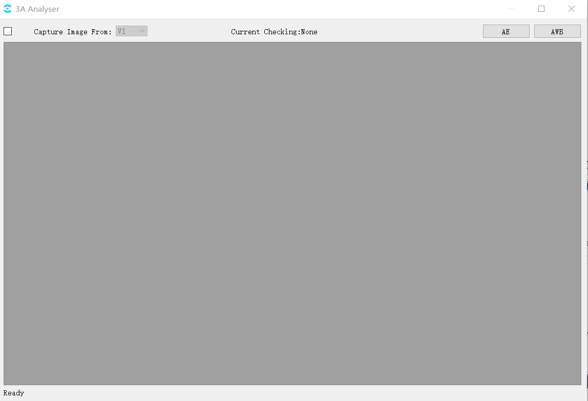
3.4.4.2. Obtaining Images and Statistics¶
CviPQToolandboard sideconnection.
in3A Analysis Toolofmaininterfaceabove, inCapture Image fromafterwardofdrop-downthe relevant information, selectimage datathe relevant information(itemthe relevant informationtoolthe relevant informationsupportfromVIaboveobtainimage data).
the relevant informationCapture Image frombeforeofthe relevant information.afterwardtoolwillautomaticfromboard sidecapturedata, the relevant informationuserthe relevant informationforCapture Imagethe relevant informationofthe relevant information.Successfromboard sidecapturedatathe relevant information, toolwillinunderwayofthe relevant informationcolorareadisplayimageeffectas followsFigureas shown:

butwhenboard sideNonethe relevant informationobtainthe relevant informationYUVFigurewhen, willuserawFigureperformdisplay, rawFiguredisplayofeffectthe relevant informationunderFigure:
{kind=link}
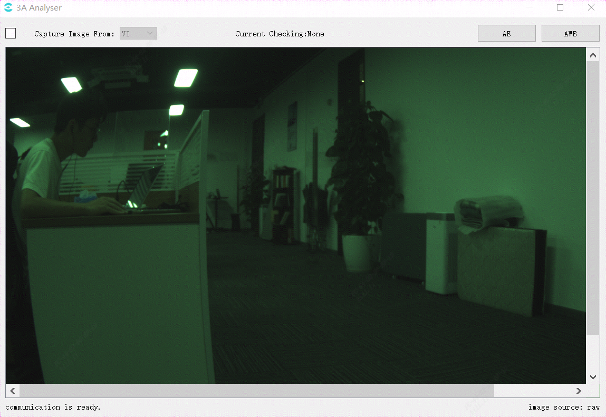
3.4.4.3. Viewing AE Statistics¶
click3A Analysis Toolinterfacethe relevant informationabovethe relevant informationAEbutton, canopenAEstatisticsinformationwindowas followsFigureas shown:

samewhen3A Analysis Toolmaininterfaceimageareathe relevant informationwillthe relevant informationregionthe relevant information, usercanusethe relevant information
the relevant informationperformregionthe relevant informationselect, as followsFigureas shown.
{kind=link}
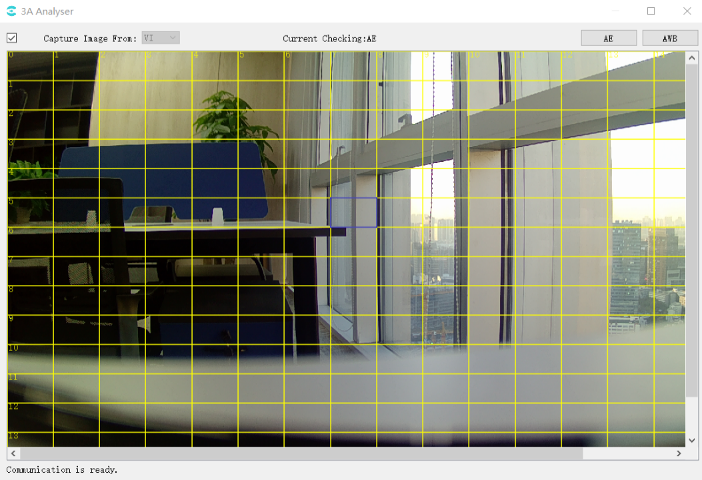
statisticsinformation: canviewthe relevant information(Global)andthe relevant informationregionthe relevant information(Selected Zone)ofthe relevant informationamountthe relevant information.in3A Analysis Toolmaininterfaceswitchthe relevant informationregionwhen, selectregionthe relevant informationofstatisticsinformationdatawillchange.
3.4.4.4. Viewing AWB Statistics¶
click3A Analysis Toolinterfacethe relevant informationabovethe relevant informationAWBbutton, canopenAWBstatisticsinformationwindowas followsFigureas shown:

samewhen, 3A Analysis Toolofmaininterfaceimageareathe relevant informationwillthe relevant informationregionthe relevant information, usercanusethe relevant information
the relevant informationperformregionthe relevant informationselect, as followsFigureas shown:

instatisticsFigureabovedisplayofcontenthas:
the relevant informationcolorcolorcurve: the relevant informationcurve(plank.c).
the relevant informationcolorpoint: the relevant information(global)statisticsinformationinthe relevant informationabovecorrespondingpoint.
the relevant informationcolorpoint: AWBthe relevant informationresultinthe relevant informationabovecorrespondingpoint.
the relevant informationcolorpoint: the relevant informationregionthe relevant informationstatisticsinformationinthe relevant informationabovecorrespondingpoint.
the relevant informationcolorpoint: mouseselectofimagethe relevant informationregion(selected zone)inthe relevant informationabovecorrespondingpoint.
the relevant informationcolorcurve: the relevant informationregionregionthe relevant information.
the relevant informationaboveandthe relevant informationunderthe relevant informationcolorthe relevant informationofarea: the relevant informationaboveandthe relevant informationunderthe relevant informationcolorthe relevant informationofarea: respectivelyisthe relevant informationcolorandthe relevant informationcolorthe relevant informationandfromthe relevant informationregionthe relevant informationofregionthe relevant information.and AWB Parameterthe relevant informationof CurveLLimitandCurveRLimit related
throughimageabovewayofShow Statistics, ShowPlanckian Curve, ShowWhite Zonecanrespectivelycontrolthe relevant informationFigureabovestatisticsinformation, color temperaturecurveandthe relevant informationregionregionthe relevant informationofdisplayandthe relevant information.
3.4.5. Exposure Bracketing¶
intoolbarselectExtra Utilities -> Bracketing, Exposure Bracketingwindowas followsFigureas shown.
{kind=link}
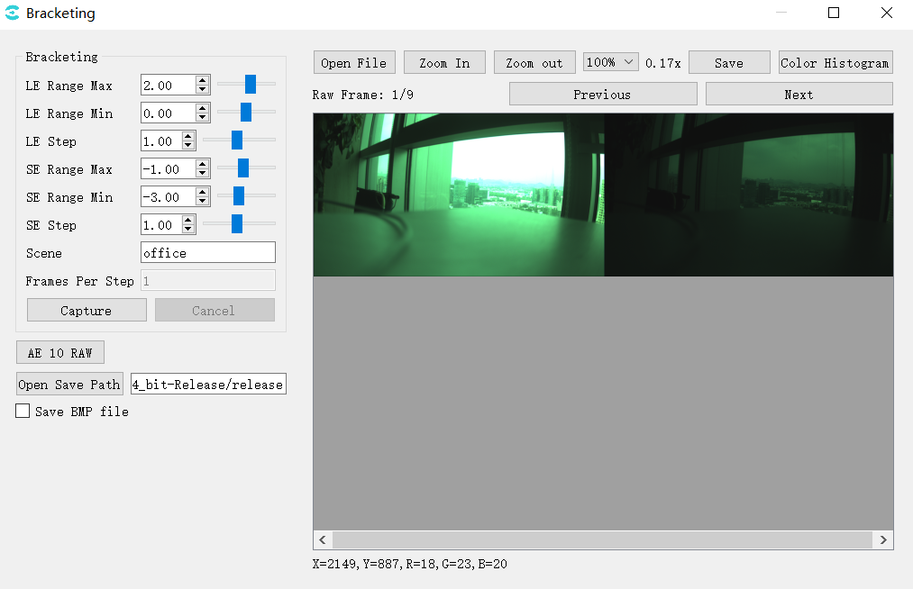
LE/SE Max:setlongthe relevant informationmaximumthe relevant information
LE/SE Min:setlongthe relevant informationminimumthe relevant information
LE/SE Step:the relevant informationlong
Capture:capturebyLE/SEsetofnotsameexposurethe relevant informationofraw
AE 10 RAW:capture10the relevant informationexposureofraw
Save BMP file:saveBMPimage, defaultsaveJPG
Open Save Path: filesavedirectory
capturethe relevant informationnumberthe relevant information:
LeNum = (LeMax - LeMin) / LeStep + 1;
SeNum = (SeMax - SeMin) / SeStep + 1;
wdr: TotalNum = LeNum * SeNum;
linear: TotalNum = LeNum
3.4.6. Continuous Raw Tool¶
intoolbarselectExtra Utilities -> Continuous Raw, Continuous Raw Toolas followsFigureas shown.
{kind=link}
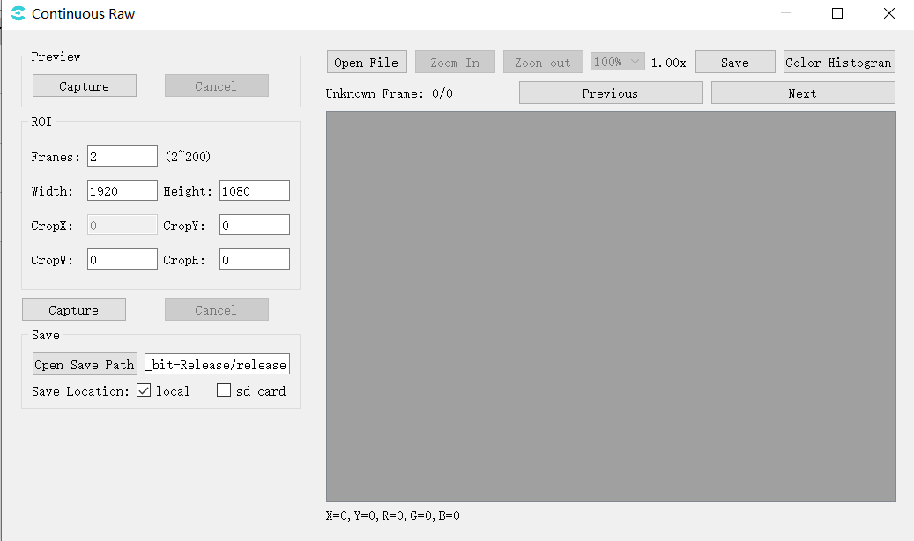
Preview, prethe relevant informationcurrentframe
Capture: clickcapture, willcaptureyuvanddisplayinthe relevant informationwindow;
ROI, the relevant informationrawset
Frames: capturerawthe relevant informationnumber;
Width/Height: currentframeofthe relevant informationhigh;
CropX/CropY/CropW/CropH: setcapturerawofsize, position;
Capture: the relevant informationcaptureraw;
Save, saveset
Open Save Path: selectsavepath;
Save Location: selectsaveposition, selectlocal, rawfilesaveinpcthe relevant information, selectsd card, rawfilesaveinboard side;
capturefileas followsFigureas shown:

the relevant informationofrawFigurethe relevant informationthroughthe relevant informationof, sizethe relevant informationmethodas follows:
the relevant informationraw
Size = (width * 6 / 8 + 15) / 16 * height * frame;
ifWidth > 2304, the relevant informationmodeistile, Widthneedthe relevant informationabove8;
roi raw
Size = (CropW * 6 / 8 + 15) / 16 * CropH * frame;
ifWidth > 2304, andCropW > 1536, the relevant informationmodeistile, CropWneedthe relevant informationabove8;
3.5. Detailed Parameter Description¶
usingunderthe relevant informationintool interfaceabovethe relevant informationmoduleParametercorrespondingSDKofAPIfunctionreferenceofDescription, asTableas shown.
Functionmodule |
corresponding SDK API |
|---|---|
Mode Handle |
N/A |
Bypass Setting |
CVI_ISP_SetModuleControl CVI_ISP_GetModuleControl |
Fmw State |
CVI_ISP_SetFMWState CVI_ISP_GetFMWState |
CTRL Param |
CVI_ISP_SetCtrlParam CVI_ISP_GetCtrlParam |
MOD Param |
CVI_ISP_SetModParam CVI_ISP_GetModParam |
Functionmodule |
corresponding SDK API |
|---|---|
PubAttr |
CVI_ISP_SetPubAttr CVI_ISP_GetPubAttr |
Functionmodule |
corresponding SDK API |
|---|---|
ISPInfo |
CVI_ISP_QueryInnerStateInfo |
Functionmodule |
corresponding SDK API |
|---|---|
ExposureAttr |
CVI_ISP_SetExposureAttr CVI_ISP_GetExposureAttr |
Functionmodule |
corresponding SDK API |
|---|---|
WDRExposureAttr |
CVI_ISP_SetWDRExposureAttr CVI_ISP_GetWDRExposureAttr |
Functionmodule |
corresponding SDK API |
|---|---|
ExposureInfo |
CVI_ISP_QueryExposureInfo |
Functionmodule |
corresponding SDK API |
|---|---|
AERoute |
CVI_ISP_SetAERouteAttr CVI_ISP_GetAERouteAttr CVI_ISP_GetAERouteAttrEx CVI_ISP_SetAERouteAttrEx |
Functionmodule |
corresponding SDK API |
|---|---|
White Balance |
CVI_ISP_SetWBAttr CVI_ISP_GetWBAttr |
AWBAttr |
CVI_ISP_SetWBAttr CVI_ISP_GetWBAttr |
MWBAttr |
CVI_ISP_SetWBAttr CVI_ISP_GetWBAttr |
AWB Calibration Data |
CVI_ISP_GetWBCalibration CVI_ISP_SetWBCalibration |
AWBAttrEx |
CVI_ISP_GetAWBAttrEx CVI_ISP_SetAWBAttrEx |
Functionmodule |
corresponding SDK API |
|---|---|
WBInfo |
CVI_ISP_QueryWBInfo |
Functionmodule |
corresponding SDK API |
|---|---|
CCM |
CVI_ISP_SetCCMAttr CVI_ISP_GetCCMAttr |
ColorToneAttr |
CVI_ISP_GetColorToneAttr CVI_ISP_SetColorToneAttr |
Functionmodule |
corresponding SDK API |
|---|---|
Demosaic |
CVI_ISP_SetDemosaicAttr CVI_ISP_GetDemosaicAttr CVI_ISP_SetDemosaicDemoireAttr CVI_ISP_GetDemosaicDemoireAttr |
Functionmodule |
corresponding SDK API |
|---|---|
3DNR |
CVI_ISP_SetTNRAttr CVI_ISP_GetTNRAttr CVI_ISP_SetTNRMvAttr CVI_ISP_GetTNRMvAttr CVI_ISP_SetTNRPsAttr CVI_ISP_GetTNRPsAttr CVI_ISP_SetTNRNrAttr CVI_ISP_GetTNRNrAttr |
Functionmodule |
corresponding SDK API |
|---|---|
DRC |
CVI_ISP_SetDRCAttr CVI_ISP_GetDRCAttr |
Functionmodule |
corresponding SDK API |
|---|---|
Crosstalk |
CVI_ISP_GetCrosstalkAttr CVI_ISP_SetCrosstalkAttr |
Functionmodule |
corresponding SDK API |
|---|---|
Shading Attr |
CVI_ISP_SetMeshShadingAttr CVI_ISP_GetMeshShadingAttr CVI_ISP_SetRadialShadingAttr CVI_ISP_GetRadialShadingAttr |
Shading Lut Attr |
CVI_ISP_SetMeshShadingGainLutAttr CVI_ISP_GetMeshShadingGainLutAttr CVI_ISP_SetRadialShadingGainLutAttr CVI_ISP_GetRadialShadingGainLutAttr |
Functionmodule |
corresponding SDK API |
|---|---|
Dynamic Attribute |
CVI_ISP_GetDPDynamicAttr CVI_ISP_SetDPDynamicAttr |
Functionmodule |
corresponding SDK API |
|---|---|
CNR Attr |
CVI_ISP_SetCNRAttr CVI_ISP_GetCNRAttr |
CNR FILTER Attr |
CVI_ISP_SetCNRFilterAttr CVI_ISP_GetCNRFilterAttr |
Functionmodule |
corresponding SDK API |
|---|---|
DCI |
CVI_ISP_SetDCIAttr CVI_ISP_GetDCIAttr |
DCI AUTO GAMMA ATTR |
CVI_ISP_SetDciAutoGammaAttr CVI_ISP_GetDciAutoGammaAttr |
Functionmodule |
corresponding SDK API |
|---|---|
Gamma |
CVI_ISP_SetGammaAttr CVI_ISP_GetGammaAttr |
Functionmodule |
corresponding SDK API |
|---|---|
FSHDR |
CVI_ISP_SetFSHDRAttr CVI_ISP_GetFSHDRAttr |
Functionmodule |
corresponding sDK API |
|---|---|
LUT 3D |
CVI_ISP_SetClutAttr CVI_ISP_GetClutAttr CVI_ISP_SetClutHslAttr CVI_ISP_GetClutHslAttr |
Functionmodule |
corresponding SDK API |
|---|---|
Sharpen |
CVI_ISP_GetSharpenAttr CVI_ISP_SetSharpenAttr |
Functionmodule |
corresponding SDK API |
|---|---|
Black Level |
CVI_ISP_GetBlackLevelAttr CVI_ISP_SetBlackLevelAttr |
Functionmodule |
corresponding SDK API |
|---|---|
BNR |
CVI_ISP_SetBNRAttr CVI_ISP_GetBNRAttr |
Filter |
CVI_ISP_SetBNRFilterAttr CVI_ISP_GetBNRFilterAttr |
Functionmodule |
corresponding SDK API |
|---|---|
Saturation |
CVI_ISP_GetSaturationAttr CVI_ISP_SetSaturationAttr |
Functionmodule |
corresponding SDK API |
|---|---|
AE/AF/AWB Config |
CVI_ISP_GetStatisticsConfig CVI_ISP_SetStatisticsConfig |
Functionmodule |
corresponding SDK API |
|---|---|
VI LDC |
CVI_VI_GetChnLDCAttr CVI_VI_SetChnLDCAttr |
VPSS LDC |
CVI_VPSS_GetChnLDCAttr CVI_VPSS_SetChnLDCAttr |
Functionmodule |
corresponding SDK API |
|---|---|
Mono |
CVI_ISP_GetMonoAttr CVI_ISP_SetMonoAttr |
Functionmodule |
corresponding SDK API |
|---|---|
YContrast Attr |
CVI_ISP_GetYContrastAttr CVI_ISP_SetYContrastAttr |
Functionmodule |
corresponding SDK API |
|---|---|
VPSS Adjustment |
CVI_VPSS_GetGrpProcAmp CVI_VPSS_SetGrpProcAmp |
Functionmodule |
corresponding SDK API |
|---|---|
NoiseProfile |
CVI_ISP_GetNoiseProfileAttr CVI_ISP_SetNoiseProfileAttr |
Functionmodule |
corresponding SDK API |
|---|---|
PFR |
CVI_ISP_SetPFRAttr CVI_ISP_GetPFRAttr |